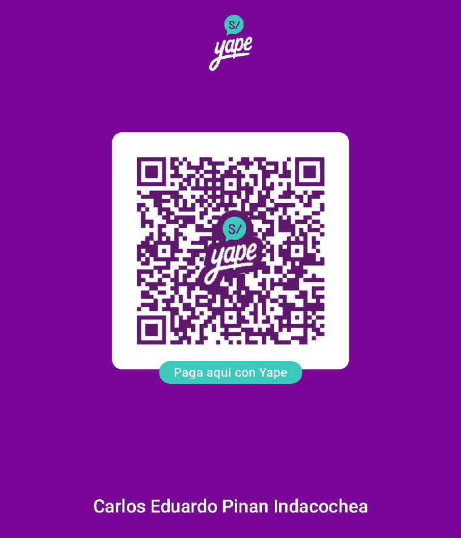
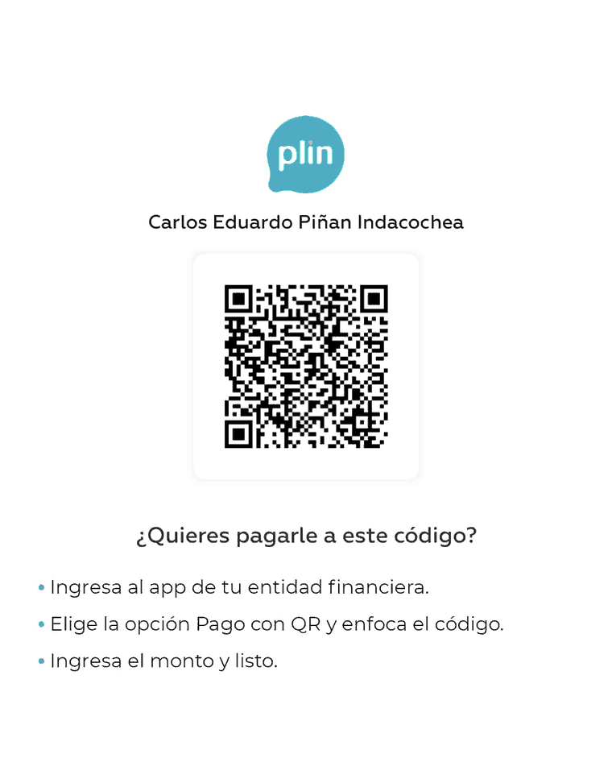

Desde Perú, con Yape o Plin — sin comisión para ninguna de las dos partes.

Escanéalo desde el lector de QR de la app de Yape. Es una billetera del BCP y funciona desde el Yape de cualquier banco.

Entra al app de tu entidad financiera → Pago con QR. Funciona desde el app de cualquier banco peruano.
El QR lleva la cuenta, no un número de celular: ninguno de los dos códigos tiene un teléfono dentro, y eso se comprobó decodificándolos antes de publicarlos.
Publico apps y juegos para Android en mi tiempo libre, desde Lima. Casi todos son gratis; algunos llevan anuncios y otros no llevan nada. Donar es un gracias y nada más: no desbloquea ninguna función, no quita ningún anuncio, y ninguna de las apps tiene forma de saber si donaste. Ninguna lleva una biblioteca de cobros dentro y ninguna muestra un aviso pidiendo dinero — esta página es el único sitio donde se pide.
In English: the two QR codes above are Yape and Plin, Peruvian instant-payment apps, free on both sides. From anywhere else, use GitHub Sponsors, Ko-fi or PayPal. Nothing is ever asked for inside the apps, and donating unlocks nothing.